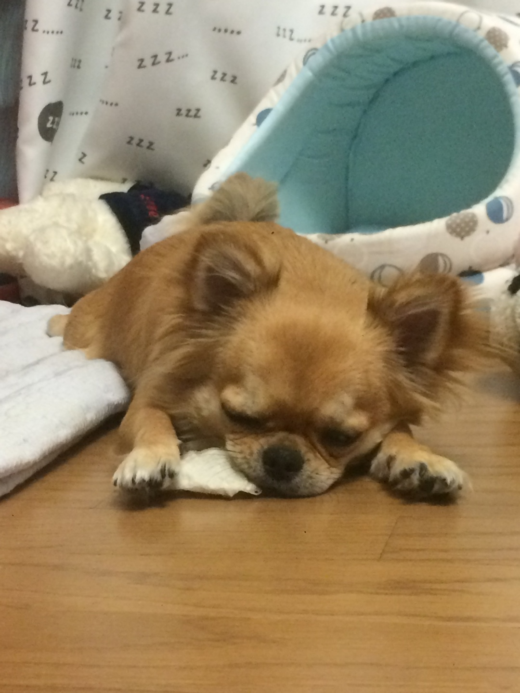
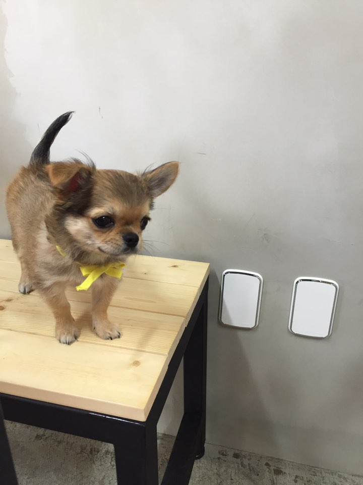
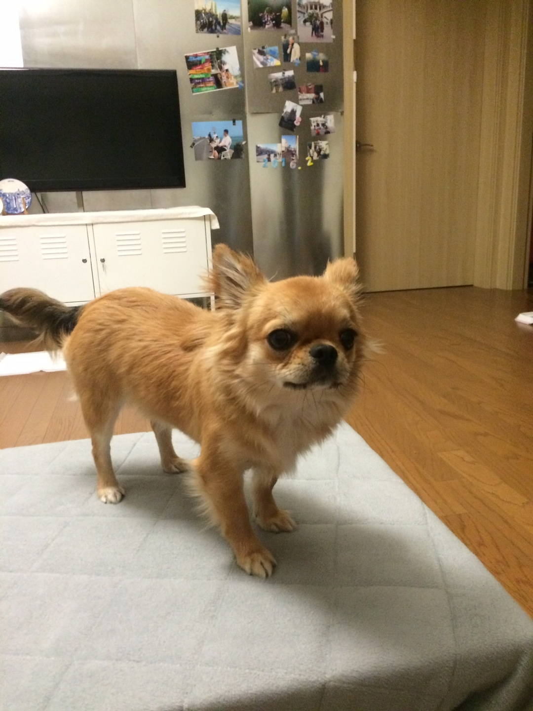
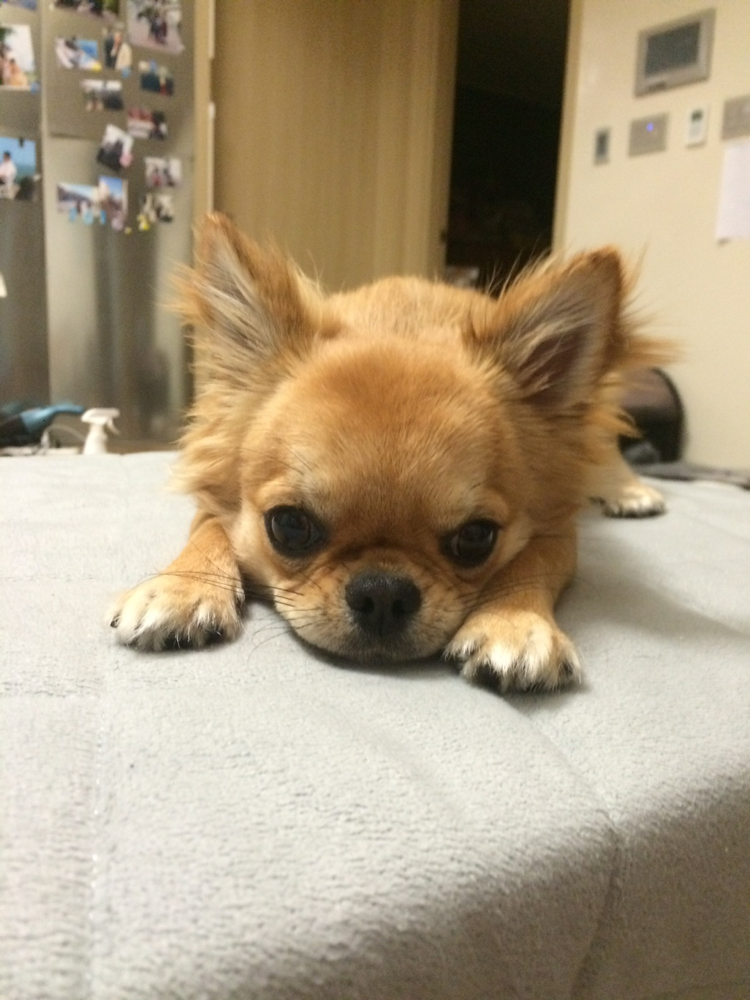

다람이의 애기시절👶

다람이라는 이름은 사실 아주 직관적으로 지은 이름이에요😎
다람쥐를 닮아서 이름이 다람이가 되었답니다🐿

다람이는 2016년 아빠와 여동생의 계획으로 우리집에 들어오게 되었어요😂
그때의 당황스러움을 생각하면...😥

집에 왔더니 왠 강아지가 한 마리 있는 거예요🙄
근데 또 얼마나 작고 귀엽던지😍

엄마도 상의도 없이 강아지를 데려온 것에 화가 났지만 다람이가 대소변도 잘 가리고
워낙 귀여워서 결국 넘어갔더랬죠🤗
뒤로 돌아가기